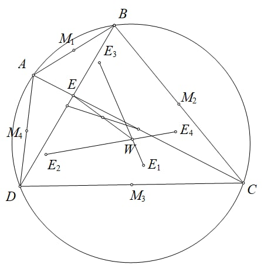
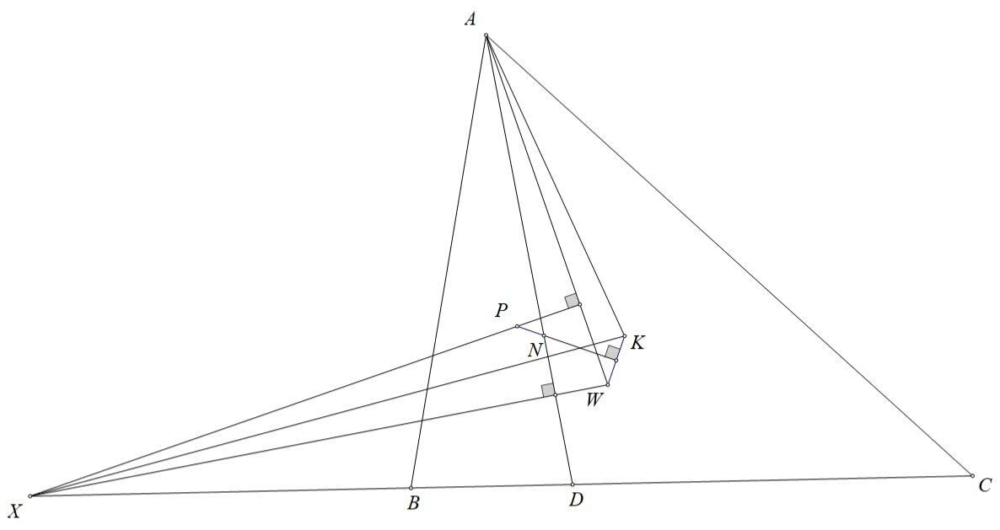
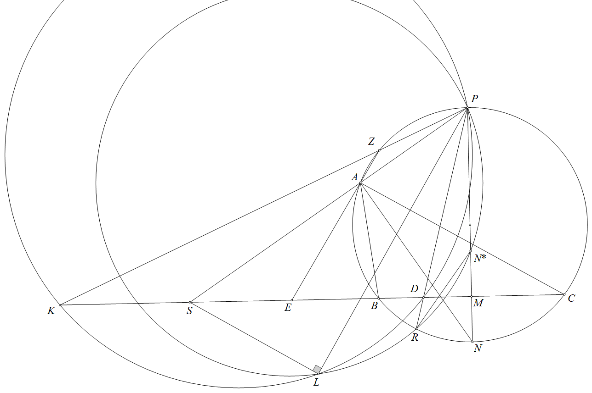
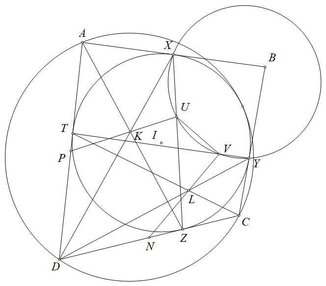

DGO – Discord Geometry Olympiad
Problem 3
Hard
(P3 DGO 2023) Let \(ABCD\) be a cyclic quadrilateral with \(M_1,M_2,M_3,M_4\) being the midpoints of segments \(AB,BC,CD,DA\) respectively. Suppose \(E\) is the intersection of diagonals \(AC,BD\) of quadrilateral \(ABCD\). Define \(E_1\) to be the isogonal conjugate point of point \(E\) in \(\triangle M_1CD\). Define \(E_2,E_3,E_4\) similarly. Suppose \(E_1E_3\) intersects \(E_2E_4\) at a point \(W\). Prove that: The Newton-Gauss line of quadrilateral \(ABCD\) bisects segment \(EW\).

Problem 4
Very Easy
(P4 DGO 2023) Let \(\triangle ABC\) be a triangle with altitude \(AD\), circumcircle \(\Gamma\) and diameter \(AP\) of \(\Gamma\). Points \(U,V\) lie on the perpendicular bisector of \(BC\) such that \(B,U,C,V\) lie on a circle. Line \(AU\) intersects \(BC\) at \(K\). \(VP\) intersects the circle with diameter \(UV\) again at \(S\). Line \(SK\) intersects the circle with diameter \(UV\) again at \(T\). Prove that: \(T,D,U\) are collinear.

Problem 5
Moderate
(P2 DGO 2023) Given \(\triangle ABC\) with \(K\) being the \(A\)-Humpty point. Points \(X,D\) lie on line \(BC\) such that \((XD,BC) = -1\). Point \(W\) lies on the bisector of \(\angle BAC\) such that \(XW\) is perpendicular to \(AD\). The perpendicular bisector of segment \(WK\) cuts the line from point \(X\) perpendicular to the bisector of \(\angle BAC\) at point \(P\) and line \(AD\) at point \(N\). Prove that: \(A,P,N,K\) lie on a circle.

Problem 6
Moderate
(P3 DJGO 2023) Let \(\triangle ABC\) be an acute triangle with \(N,P\) being the midpoint of arc \(BC\) not containing \(A\) and the arc \(BC\) containing \(A\) of the circumcircle of \(\triangle ABC\) respectively. The external bisector of \(\angle BAC\) intersects \(BC\) at point \(S\). Construct the point \(N^*\) to be the reflection of point \(N\) over \(BC\). \(D\) is an arbitrary point lying on segment \(BC\). \(E\) is a point lying on line \(BC\) and satisfying \((BC,DE) = -1\). Line \(AE\) intersects the circumcircle of \(\triangle ABC\) again at \(Z\). Line \(PZ\) and \(BC\) intersects at \(K\). Line \(PD\) intersects the circumcircle of \(\triangle ABC\) again at \(R\). The circumcircle of \(\triangle PDK\) intersects the circumcircle of \(\triangle PRN^*\) again at \(L\). Prove that: Lines \(LS\) and \(LP\) are perpendicular.

Problem 7
Hard
(P6 DJGO 2023) Let \(ABCD\) be a convex quadrilateral. Suppose there exists a circle \(\Omega\) with center \(I\), lying inside \(ABCD\) such that \(AB,BC,CD,DA\) are tangent to \(\Omega\) at \(X,Y,Z,T\) respectively. Let \(N,P\) be the midpoints of segments \(DC,DA\). Let \(DX,AZ\) intersect at \(K\) and \(DY,CT\) intersect at \(L\). \(KP\) intersects \(XZ\) at point \(U\) and \(LN\) intersects \(YT\) at point \(V\). Suppose the circumcircle of \(\triangle DAC\) is internally tangent to \(\Omega\). Prove that: Points \(X,U,V,Y\) lie on a circle.
